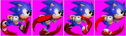

Sonic the Hedgehog — это видеоигровая франшиза, созданная компанией Sega, центральным персонажем которой является её корпоративный талисман — синий ёж Соник. Серия берёт начало в 1991 году с выпуска одноимённой игры на консоли Sega Mega Drive (в Северной Америке — Sega Genesis). Успех первой части оказался значительным и положил начало многочисленным продолжениям, ответвлениям и переизданиям, выходящим на протяжении нескольких десятилетий. Игры серии, как правило, относятся к жанру экшен-платформера. Изначально они были двумерными, однако с развитием технологий в 1990-х годах франшиза перешла в трёхмерное пространство. Помимо основных платформеров, Соник появлялся в проектах других жанров: головоломках, гонках, ролевых играх, а также в спортивных и музыкальных ответвлениях. Игры выходили на самых разных платформах — от домашних консолей и портативных систем до персональных компьютеров и мобильных устройств. Общий тираж серии превысил 250 миллионов копий, что делает Sonic одной из самых продаваемых игровых франшиз в истории. Сюжетная основа серии обычно строится вокруг противостояния Соника и злодея — доктора Айво «Эггмана» Роботника. Планы Эггмана, как правило, включают создание армий роботов, поиск мистических Изумрудов Хаоса и попытки установить контроль над миром. В борьбе с ним Сонику помогают его друзья: Майлз «Тейлз» Прауэр, Эми Роуз, Наклз, а также другие персонажи, число которых со временем росло. Игры серии часто проектируются с расчётом на то, чтобы выглядеть динамично и современно, оставаясь при этом доступными для игроков разных возрастов, хотя отдельные выпуски могут иметь более «взрослый» тон. Сложность обычно увеличивается постепенно, что позволяет как новичкам, так и опытным игрокам находить для себя подходящий уровень. Изначально франшиза создавалась как ответ на успех серии Super Mario от Nintendo и должна была укрепить позиции Sega на рынке. Со временем Sonic вышел за пределы видеоигр: появились анимационные сериалы, комиксы, полнометражные фильмы и разнообразная сопутствующая продукция. Несмотря на изменения в игровой индустрии и смену поколений консолей, серия продолжает развиваться, а её персонажи остаются узнаваемыми и востребованными по всему миру.

Распределение
- По алфавиту
- По дате появления
- По платформам